| 日付 | 2014年3月9日（日） |
|---|---|
| メンバー | 家族（妻、長女・3歳、長男・0歳） |
| アクセス | 車 |
イチゴ狩りに行こうと思い、ネットでいろいろ調べてみたが
30分食べ放題1500円というのが相場のようだ。
子供がいるとハンデになるのに、歩ける子供は有料らしく割に合わない。
それに30分だとせわしなくて、子連れだとゆっくりできない。
食べ放題以外のところを探していると、三浦半島のソレイユの丘という場所では
入場料無料で量り売りとのこと。
横須賀市が運営する農業体験型総合公園で、
イチゴ狩り以外にもいろいろ楽しめる場所がありそうだ。
9:45にソレイユの丘に到着。
オープンは9:30だが、広大な駐車場はガランとしている。
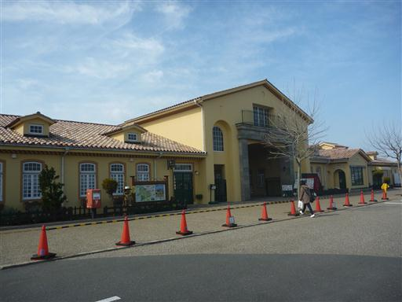
入場すると菜の花畑が広がる。
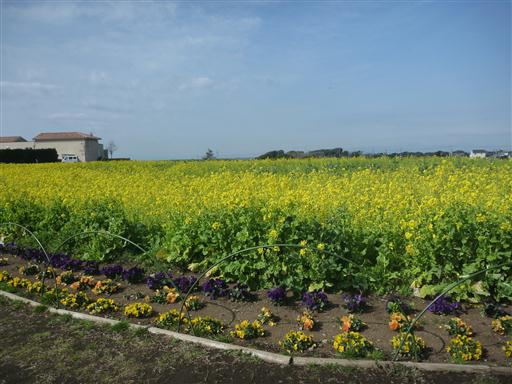
イチゴ狩りは12時から整理券を配る方式になっている。
まずは公園の遊具で一遊び。大きなトンネルすべり台やターザンロープなど
様々な遊具が一通りそろっている。
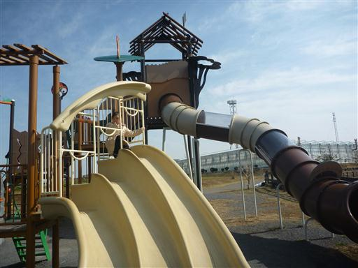
ゴーカートを体験。この歳になって初めてゴーカートに乗る。
車を運転できる身にとっては楽しさは半減だ。
子供がもっと大きくなれば、自分で運転して楽しめるだろう。
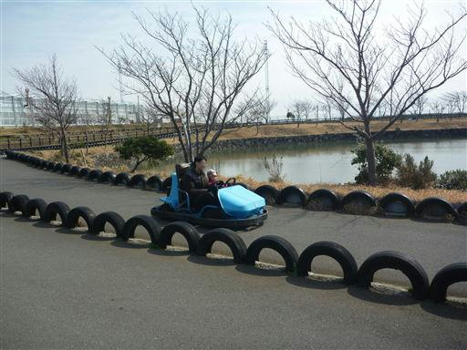
11時過ぎにイチゴ狩りのハウスの方を見ると、続々と人が集まっている。
整理券配布は12時からだが、行ってみるとすでに結構な数の人が並んでいる。
限定20組のため、1時間ほど列に並ぶことになる。順番は17番目でぎりぎりセーフだった。
1組で一人並ぶだけで良いので、その間子供は公園で遊ばせておく。
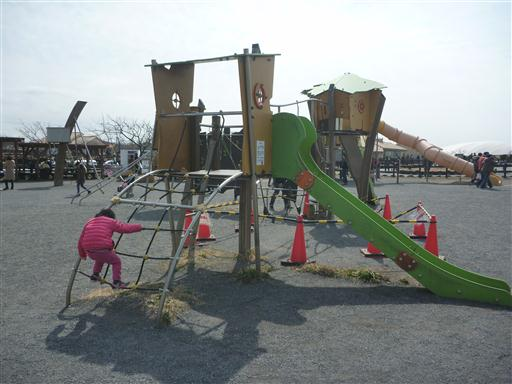
無事整理券をゲット。イチゴ狩りは13：00～のため、待ち時間に動物コーナーに行ってみる。
ヤギやアルパカに餌やりができる。
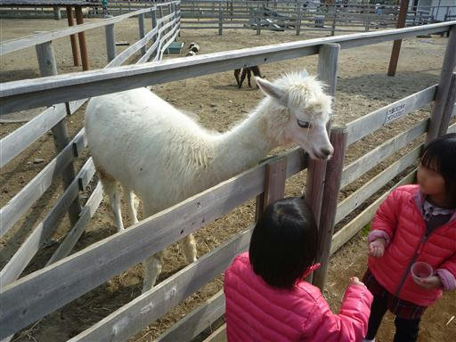
中国雑技のショー。
なかなか面白かったが、演技の途中で13時になったのでイチゴ狩りのハウスに向かう。
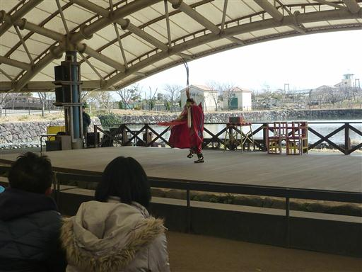
ハウスの前にはすでに多くの人が集まってきている。
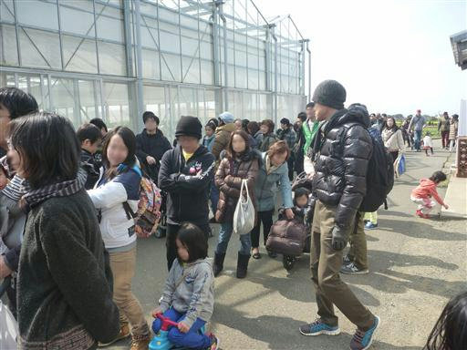
早速イチゴ狩りを行う。赤くて大きな実がいっぱいなっている。
高い場所に植えられているので大人は収穫しやすいが、娘は抱っこしてあげないと収穫できない。
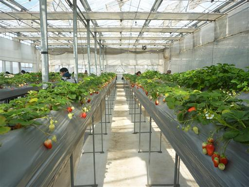
イチゴを収穫。量り売りのため、無理せず食べたい分だけゆっくり収穫できる。
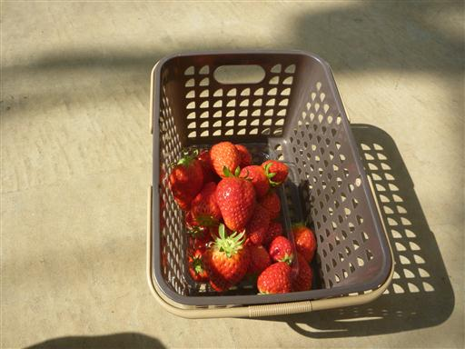
続いて隣にあるトマト狩りを行う。娘はイチゴ狩りよりハイテンション。
トマトの方が好きみたいだ。
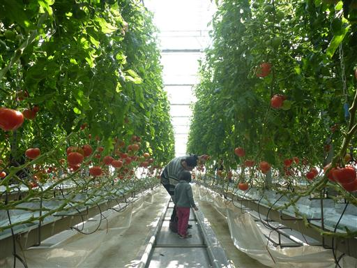
こちらは黄色いプチトマト。
土の量は非常に少なく、枝は整然と並んで天井に吊り下げられている。
これがプロの技かと感心させられる。
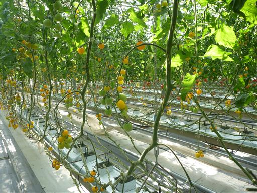
ハウスを出て会計を済ませたら、隣の建物で収穫したばかりのイチゴとトマトをいくつか食べる。
イチゴは柔らかくて甘かった。
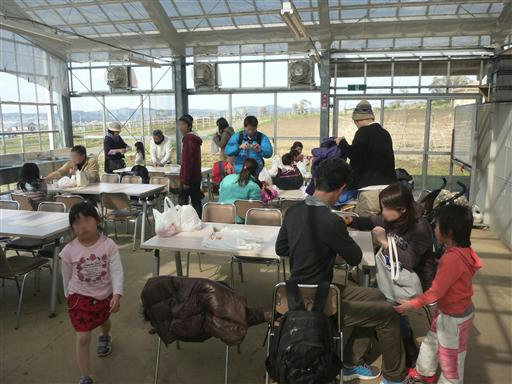
午後になると公園はかなり混雑してきている。
本日の目的を果たしたので、早いうちに帰宅の途に就くことにする。
思った以上に広く、施設が充実した公園だった。
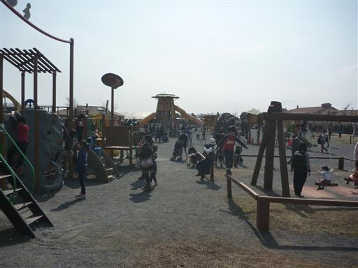